Dsa
Problem 1 CNN operations
Consider the 1D binary image I and filter F (of size 3) below:
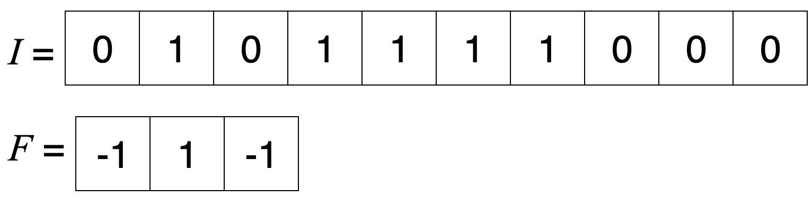
Suppose there is no padding and no bias. If we apply filter F to image I with a stride of 1, we obtain a vector of length \(L_1\).
a) What is the length \(L_1\)?
Answer: 8.
Explanation: The size after the convolution is reduced to 8,
because we did not pad the image and the filter cannot be left
aligned to the last two pixels in I. In general, for a stride of
1, the size of the output layer is reduced by \(|F| - 1\) pixels where
\(|F|\) is the size of the filter.
b) What is the output of applying the filter to the image? (It should be of length \(L_1\).)
Answer: [1, -2, 0, -1, -1, 0, -1, 0].
Explanation: We slide the filter F across I, computing
the inner product of F and the window of I at each step. For
example, the first unit's value =
$(F_0 \cdot I_0) + (F_1 \cdot I_1) + (F_2 \cdot I_2) =
(-1 \cdot 0) + (1 \cdot 1) + (-1 \cdot 0) = -1$.
Now, take the output from the previous problem and apply the ReLU activation to each element. Second, apply a max pooling filter of size 2 with stride 2. Let the output of the max pooling filter have length \(L_2\).
c) What is the length \(L_2\)?
Answer: 4.
Explanation: Because we have a max pooling filter of size 2
and a stride of 2, we are only retaining the max of every 2
elements, and so our size is reduced by a factor of 2 from 8 to 4.
d) What is the vector output of the max pool operation?
Answer: [1, 0, 0, 0].
Explanation: This is equivalent to taking the max of every
two pixels in the output of the ReLU activated convolution. For
example, the first value = max(1, 0) = 1.
e) Finally, consider the output from the previous part. In this part, we will apply a fully connected layer with a single output. Every weight leading to the output is set to 1 (there are \(|L_2|\) total weights), and we have a bias \(b = -0.5\). To obtain the final output, we use the \(\operatorname{step}(z)\) activation function; in particular, \(\operatorname{step}(z)\) equals 1 if \(z > 0\), and \(\operatorname{step}(z)\) equals 0 otherwise. What is the value of this single output?
Answer: 1.
Explanation: We have computed \(\operatorname{step}(z) = \operatorname{step}(1 + 0 + 0 + 0 -.5) = 1\).
Think about what the sequence of these three layers (convolution layer with ReLU activations, then max pooling, layer then fully connected layer) accomplishes. When is the final output 1 and when is it 0?
This is the magic of CNNs; we have constructed a network that tells you whether a binary image contains any instance of an isolated 1, regardless of where that instance occurs in the image!
CNN concepts
Here are the building blocks we will use to build a CNN:
- Convolutional layers
- Max pooling layers
- Fully connected layers
Assume that the task of our CNN is to detect animals like cats, dogs, lizards etc. in an image.
f) Which type of layer would be best to use to detect low-level features (like lines, curves, etc.) of an animal in an image?
- Convolutional
- Max pool
- Fully connected
Answer: Convolutional.
Explanation: Filters in the first convolutional layers are
responsible for detecting low-level features (e.g., edges, color,
contrast). Later convolutional layers are responsible for detecting
mid-level features (e.g., ears, eyes).
g) Suppose we are given a set of inputs where each input represents whether a useful feature of animals (tail, beak, whiskers, etc.) occurs anywhere in an image. Which type of layer would be best to use to turn these inputs into a classification of whether the image is a cat, dog, lizard, etc.?
- Convolutional
- Max pool
- Fully connected
Answer: Fully connected.
Explanation: Fully connected layers allow combining features
from the entire image and provide the final network output.
h) Suppose you have detected occurrences of some useful low-level feature, like a furry tail, throughout your image. You would like to use these local detections to figure out whether or not the furry tail occurred anywhere within larger regions of the image. Which layer would be best to use?
- Convolutional
- Max pool
- Fully connected
Answer: Max pool.
Explanation: Max pooling layers detect the strongest response
within a given window. This property allows the network to be less
sensitive to feature locations.
Problem 2 Applying Filters
Consider a \(5\times5\) input image where each pixel value is either 0 or 1:
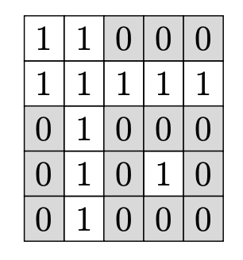
You are applying filters to this image, each with a filter size of \(3\times3\), an offset, and a stride of 1.
a) How much padding is needed in order for the output image to maintain the same dimensions (\(5\times5\)) as the input image? Recall that "padding" refers to adding a border of pixels with a value of "0" around the image.
Answer: 5.
Explanation: Recall that the formula for calculating the output dimensions (height and width) is: \(\text{Output dim.} = \left\lceil\frac{\text{Input dim.} + 2 \times \text{Padding} - (\text{Filter size} - 1) }{\text{Stride}}\right\rceil.\) As Input dim. \(=5\), Filter Size \(=3\) and Stride \(=1\), Padding of 1 is necessary in order for Output dim. = Input dim. \(=5\).
b) Suppose that you are given a filter with a size of \(3\times3\):
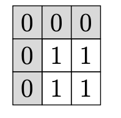
and an offset of \(-3\). After applying this filter to the (padded) input image, the output is passed through a ReLU activation function. What is the value of the upper-left pixel of the output image?
Answer: 1.
Explanation: $ \text{ReLU}\left(1 + 1 + 1 + 1 - 3\right) = 1$.
Problem 3 Pixel effects
Suppose we have an input image of size \(5\times5\).
Consider two successive convolutional layers, each with a filter with a size of \(3\times3\), a stride of 1, and padding of 1.
Focus on the center pixel of the input image.
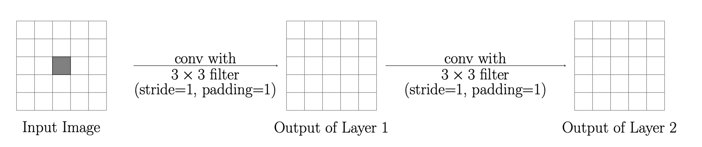
a) How many pixels in the output of the first convolutional layer are affected by this single pixel in the input image?
Answer: 9.
Explanation: The center pixel in the input image will affect the central \(3\times3\) region of the first convolutional layer's output, because the filter size is \(3\times3\) and the stride is 1.
b) How many pixels in the final output of the network (after both convolution layers) are affected by this single pixel in the input image?
Answer: 25.
Explanation: After the second convolutional layer, all pixels of the \(5\times5\) output image are affected by the center pixel of the input image.
To summarize:
- The single pixel in the input image will influence 9 pixels in the output of the first layer.
- It will influence all 25 pixels in the output of the second layer.
c) Instead of using only convolutional layers, let's instead consider max-pooling. Suppose that after each convolutional layer, we include a max-pooling filter of size \(3\times3\) with stride 2. After one convolutional layer with a \(3\times3\) filter and stride 1 and one max-pooling layer, what is the size of the resulting output image? Answer: 2x2.
Explanation: The output of the convolutional layer remains \(5\times5\). Max-pooling will result in a \(2\times2\) output image.
d) We have an input image of size \(64\times64\) instead of \(5\times5\) . We will continue using padding of 1 and \(3\times3\) filters with a stride of 1. How many convolutional layers would be necessary in order for the upper-left pixel of the input image to affect all the pixels of the output image?
Answer: 63.
Explanation: Consider the upper left-most pixel of the input image. In order for this pixel to affect the lower right-most pixel of the output image, we would need 63 convolutional layers containing a \(3\times3\) filter with a stride of 1. After 1 layer, the upper left pixel affects the upper left \(2\times2\) region of pixels. After 2 layers, the region grows to the \(3\times3\) region.
Note that zero padding is not included when identifying these regions of pixels from the input image.
Problem 4 Convolutional Tetris
We will explore using convolutional filters on the following Tetris dataset (black pixels are encoded as 1 and white pixels are 0).
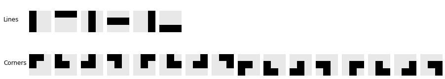
Here are two filters:
(Vertical) Sobel Filter:
(Horizontal) Sobel Filter:
These are called Sobel filters and they help detecting vertical and horizontal edges, respectively.
Let's try to apply the Sobel filters to Tetris! Imagine we build a CNN with two layers:
- A convolutional layer using one of the 3x3 Sobel filters.
- A max pool layer across all numbers in the output of the previous layer, outputting a single number.
a) If we input a 3x3 gameboard into this CNN, how many hidden neurons will we use? Do not include bias terms in your calculations. How does your answer change if we use (a) No zero-padding, (b) 1 layer of zero-padding (1 pixel border of zeros), or (c) 2 layer of zero-padding (2 pixel border of zeros)?
Explanation:
The number of hidden neurons depends on the output size of the convolutional layer. With a 3x3 input and 3x3 filter:
- No padding: (3-3+1) x (3-3+1) = 1x1 = 1 unit
- 1 layer padding: Input becomes 5x5, so (5-3+1) x (5-3+1) = 3x3 = 9 neurons
- 2 layers padding: Input becomes 7x7, so (7-3+1) x (7-3+1) = 5x5 = 25 neurons
b) For each of the two Sobel filters, identify whih Tetris piece(s) will produce the maximum response. In other words, across all pictures in the dataset, which inputs will produce the maximum possible response from the CNN? How does your answer change if we use (a) No zero-padding, (b) 1 layer of zero-padding (1 pixel border of zeros), or (c) 2 layer of zero-padding (2 pixel border of zeros)?
Explanation:
Vertical and horizontal lines will be identified by the vertical
edge detection Sobel filter and horizontal edge detection filter,
respectively, BUT only if there's enough padding (or space in the image) for the filters to detect an edge!
For example, with NO zero-padding (a), the maximum output for the vertical Sobel filter is for a vertical line on the right of the 3x3 image. With 1 zero-padding (b), the maximum output is for both a vertical line on right and center of the 3x3 image. Finally, with 2 zero-padding (c), the maximum output is for all vertical lines. This also why in practice our filters are smaller than our images -- we need to make sure there's enough space for the filter to overlap with our image in different ways to detect patterns.
If students are confused, walk them through a convolution of a Sobel on a vertical or horizontal line (with a given choice of padding) or explain intuitively (Sobel emphasizes differences across vertical or horizontal edges).
It's fun to design convolutional filters by hand, but it is a fairly laborious process. Most modern CNNs do not utilize hand-crafted convolutional filters. Instead, these filters are learned using back-propagation.
To separate the Tetris dataset, we decide on the following machine learning architecture:
Inputs: a 3x3 image of a Tetris block with one channel
1. Convolutional layer with m 3x3 filters, stride 1. Assume zero-padding of
size 1 on all sides of the input image
2. ReLU Activation
3. Flatten Layer: turns (d1, d2, d3) input into a (d1*d2*d3, 1) shaped input
4. Output (fully-connected) layer: one single neuron for a scalar output.
Pre-activation Output: A single number z
Post-activation (final) Output: z is passed through sigmoid activation to
produce final output a, 0 < a < 1, that represents the probability that
the input image contains a line.
c) Write down the dimensions of the outputs of each layer in the CNN for
a single training example. You should use m, the number of filters
in the convolutional layer, in your final answer.
Answer:
Layers:
- Output of layer 1 (convolution): (3, 3, m)
- Output of layer 2 (relu): (3, 3, m) (relu is applied element-wise)
- Output of layer 3 (flatten layer): (3 x 3 x m, 1)
- Output of layer 4 (fully connected layer): just 1 number
- Final Output (after activation): just 1 number
One-filter CNN vs. Fully-connected Neural Networks
We train a CNN with one filter using SGD (learning rate 0.08), negative log likelihood loss (no regularization) for 100 epochs. This network has 20 parameters.
- Conv layer: 1 filter of size 3×3 = 9 weights + 1 bias = 10 parameters
- FC layer: 9 inputs (from 3×3 conv output) → 1 output = 9 weights + 1 bias = 10 parameters
- Total: 10 + 10 = 20 parameters
Here are three plots showing the value of the loss as a function of the number of training epochs. Each plot was generated by training with a different random parameter initialization of the CNN on the Tetris dataset.
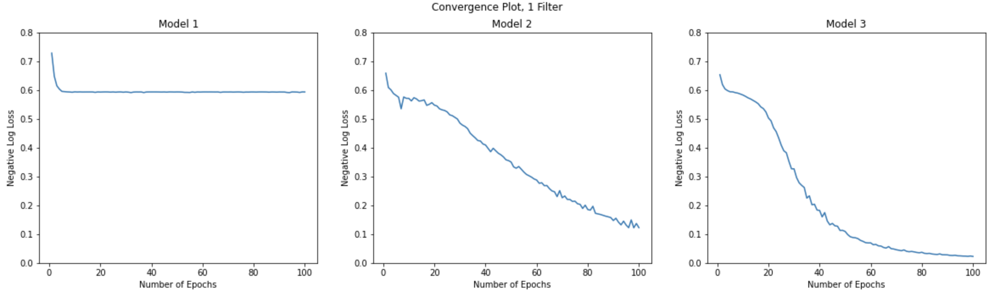
The three trained networks above have the following accuracies on the tetris dataset (for all lines vs. corners classification):
- Trained Network 1: 0.7273
- Trained Network 2: 0.9545
- Trained Network 3: 1.0
Here is a visualization of the filters learned by each of the three networks. Each row in the figure below corresponds to the single filter learned by each of the three convolutional neural networks.
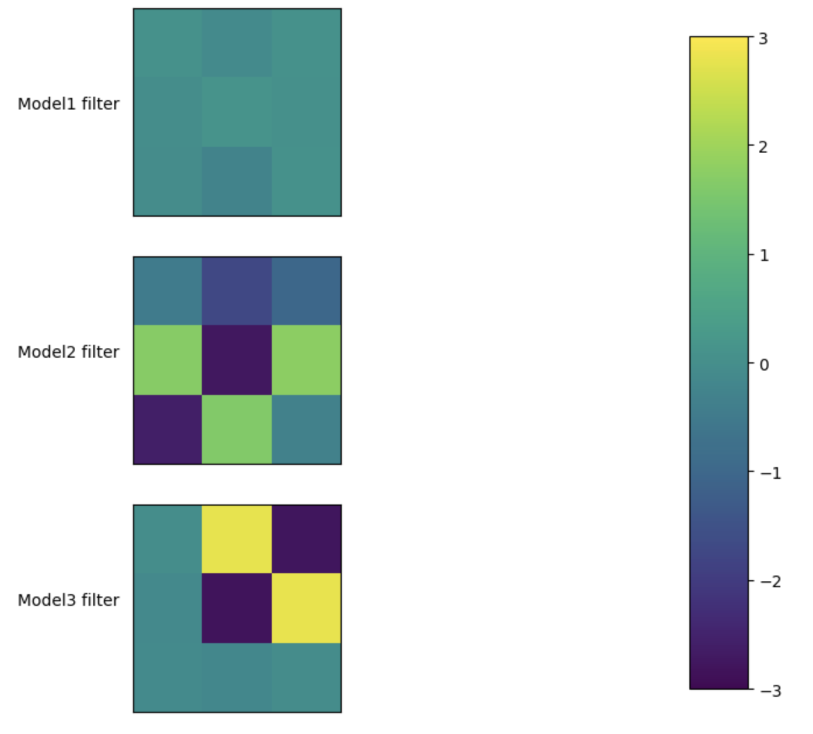
Now we train a fully-connected (FC) network using the same SGD optimizer (learning rate 0.08), negative log likelihood loss, and no regularization for 100 epochs. This network has 23 parameters.
- FC layer 1: 9 inputs → 2 hidden neurons = 9×2 weights + 2 biases = 20 parameters
- FC layer 2: 2 inputs → 1 output = 2×1 weights + 1 bias = 3 parameters
- Total: 20 + 3 = 23 parameters
Here are three plots showing the value of the loss as a function of the number of training epochs. Each plot was generated by training with a different random parameter initialization of the FC network on the Tetris dataset.
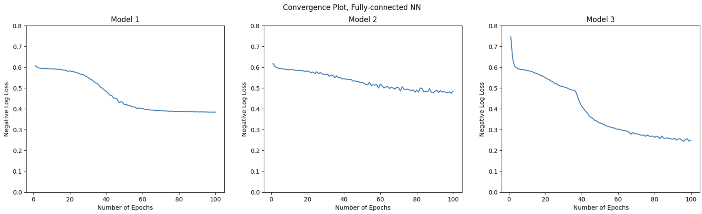
d) What do you notice about the difference between the one-filter CNN convergence plots and the FC-net convergence plots? Recall that in this problem, the one-filter CNNs and the FC Nets have about the same number of parameters and the same activation and loss function, so what might be an explanation as to why these differences would exist using these different structures?
(Risking reading a bit much into this small-scale experiment) -- what could be some potential advantages of CNNs over FC-nets when it comes to image-related tasks?
Explanation:
We notice the CNNs seem to achieve lower loss despite having roughly the SAME number of parameters.
This suggest that HOW the parameters being applied is particularly
suitable for image-related problems because the weight-sharing scheme:
- cleverly exploit the image/vision-problem structure
- (when applied to larger images) effectively reduces the computational cost, that is, the number of parameters we need to train (in contrast to fully-connected).
It's important to point out to students that:
- increasing the number of parameters in FC net almost certainly can achieve the same performance as CNNs (after all, CNNs are special FC-Nets anyway; see Homework 9, Question 2)
- By taking into consideration the "structure" of our data (pixels that are close to each other are more important for detecting important features) we can more easily learn to detect important trends in our data
- Note that SGD does not always converge to a good solution when learning the weights of the filter(s) -- especially when we use too few parameters.
Another good question to ask students: draw the two neural networks and explain why the CNN has 20 parameters, and the FC-net has 23 parameters. This is explained in the "click for parameter breakdown" but many won't have read those.
One-filter CNN vs. Two-filter CNN
We now expand to two convolutional filters using the same training setup. This network has 39 parameters.
- Conv layer: 2 filters of size 3×3 = 2×(9 weights + 1 bias) = 20 parameters
- FC layer: 18 inputs (from 3×3×2 conv output) → 1 output = 18 weights + 1 bias = 19 parameters
- Total: 20 + 19 = 39 parameters
Here are the convergence plots from three different random initializations:
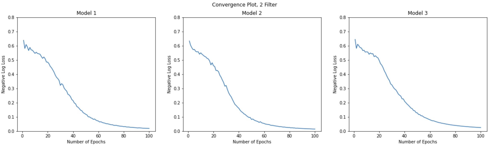
e) What do you notice about the difference between these convergence plots and the convergence plots from training models that only have one filter? What might be an explanation as to why these differences would exist?
Explanation:
In this experiment, there is less variation across
initializations for the 2 filter models, and the 2 filter models
converge faster. This could be because two filters can detect two
features/patterns, not just 1. Also, any individual filter might not
be initialized in a way that enables gradient descent to find a good
solution. By having two filters, there might be some "division of
labor" between them.
However, it's important to stress that this doesn't mean two filters always "win". Factors like the random initial weights and SGD can come to influence the training loss.
Note: This example uses 22 examples to learn >22 parameters—not recommended in practice, but useful for illustration.
Learned Filter Visualization
All three two-filter networks achieve 100% accuracy. Here are the learned filters from each network (each row shows the two filters from one CNN):
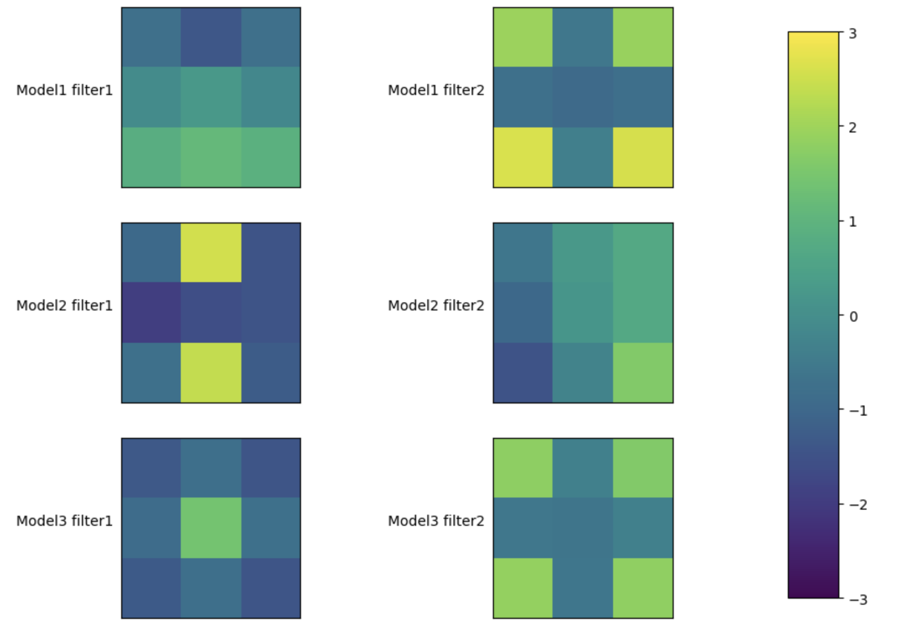
f) What may be some advantages of using back-propagation to find filters rather than designing them by hand?
Explanation:
Some advantages include:
- less manual work required, the model can automatically find filters.
- The model can also learn filters that are non-intuitive for people.
- Scales better to more complex computer vision tasks. We are only training on a very small dataset and using random initialization of weights. However, if you train on a huge dataset with many classes, it would be far more difficult to design filters by hand.
- The food for thought ties well here; direct them towards https://distill.pub/2017/feature-visualization/, which shows some low, mid, and high-level features that were learned by more complex model architectures
Problem 5 CNN architectures
In order to get practice with the structural choices in a CNN and understand how parameters are shared, we will consider how many separate weights are in NNs of different architectures.
Hint: For all the questions in this section, if you get stuck, try drawing a picture/diagram of what the network would look like.
a) In a fully-connected feedforward network, the number of weights (including biases) for one layer with 100 inputs and 80 outputs is:
Answer: 8080.
Explanation: We have 100 inputs, connecting to 80 output units.
Each of the output units thus has 101 incoming weights (the 100 weights
from the inputs, plus 1 for the bias for each output), giving 80 x 101
= 8080 total weights.
b) Consider a CNN for 1D data. Suppose a convolutional layer receives an input of size 100. This layer has 10 filters, each of size 5. Suppose we use a zero-padding of size 2 on both ends of the input, and a stride of 1. What are the dimensions of the output of this convolutional layer?
Answer: [100, 10].
Explanation: Each filter slides across with a stride of 1,
giving 100 output units for each filter, and we have 10 filters. In terms of the formula given in the notes, we have \(n_l = \lceil(100 + 2*2 - (5-1))/1\rceil = 100\) units for the output of a single filter, where this equation is from Section 8.1 of the notes.
c) How many weights (including bias) are needed to specify the map from the input to the output of this convolutional layer?
Answer: 60.
Explanation: Including the 5 filter weights in each filter
and the bias in each filter, we have 6 inputs into each output
unit. Since we have 10 filters, we need 60 weights to specify the
feature map.
d) Now consider a zero-padded max pooling layer with an input of size 100, a pooling filter of size 3, and a stride of 2. Assume zero-padding of size 1. What are the dimensions of the output of this pooling layer?
Answer: [50].
Explanation: The filter has a stride of 2, meaning we drag
the filter across the layer in steps of 2; this transforms our vector
from having 100 elements to having 50 elements. Note that at each
filter position, we find the maximum value over a size-3 window.
e) How many weights (including bias) are needed to specify the max pooling
layer?
Answer: 0.
Explanation: A max pooling layer does not have weights, since
the operation is just to take a max across values of the input
image. A stride and filter size completely define a max pooling
layer.
Problem 6 Conversion from Convolutional to Fully Connected
Let's now formalize the relationship between convolutional layers and fully connected layers.
Suppose we have a:
- 1D input \(x\) of size 4
- a filter \(f\) of size 3: \((w_1, w_2, w_3)\) with stride of 1 and no bias.
- a 1D output \(z\) of size 4, produced by convolving \(f\) with \(x\). To preserve size, we use padding of size 1 on both sides.
Assume that when doing convolutions, inputs that fall outside the image indices are treated as zeros.
The effect of convolving this filter with the input layer \(x\) is actually equivalent to constructing a matrix \(W\) of weights between two layers of a fully connected network, i.e., $ z = W^\top x;, $ where \(W\) is a 4 by 4 matrix (and there is no bias term). Note though that in the conversion, the same weight may occur more than once in the matrix \(W.\)
Which of the following weight matrices corresponds to \(W^T\) in the equation above? That is, \(z\) was produced using a convolution between \(f\) and \(x\), but if we want to produce \(z\) using \(W\) and \(x\), as defined above, what would \(W^\top\) be?
Hint: What is the output \(z\), in terms of the elements of \(w\) and \(x\)?
- \(\left[ \begin{array}{c} w_2 & w_3 & 0 & 0\\w_1 & w_2 & w_3 & 0\\ 0 & w_1 & w_2 & w_3\\0 & 0 & w_1 & w_2\\ \end{array} \right]\)
- \(\left[ \begin{array}{c} w_2 & w_1 & 0 & 0\\w_3 & w_2 & w_1 & 0\\ 0 & w_3 & w_2 & w_1\\0 & 0 & w_3 & w_2\\ \end{array} \right]\)
- \(\left[ \begin{array}{c} w_1 & 0 & 0 & 0\\w_2 & w_1 & 0 & 0\\ w_3 & w_2 & w_1 & 0\\0 & w_3 & w_2 & w_1\\ \end{array} \right]\)
- \(\left[ \begin{array}{c} w_1 & w_2 & w_3 & 0\\ 0 & w_1 & w_2 & w_3\\0 & 0 & w_1 & w_2\\0 & 0 & 0 & w_1\\ \end{array} \right]\)
Answer: \(\left[ \begin{array}{c} w_2 & w_3 & 0 & 0\\w_1 & w_2 & w_3 & 0\\ 0 & w_1 & w_2 & w_3\\0 & 0 & w_1 & w_2\\ \end{array} \right]\).
Explanation: By looking at the matrix you can see the "sliding" of the filter
during the convolution. In a fully-connected network every entry in
the matrix is a different weight value that has to be learned; in contrast,
in the convolutional case above you can see that each weight appears
several times in the matrix (for essentially every output unit) and
many weights are zero. The "re-use" of weights is referred to as
"parameter sharing" or "parameter tying." This network can be trained
with error back-propagation as we already understand it; care must
just be taken to sum over all "error values" that a particular weight
can contribute to.
Problem 7 Kat's Cat
In this section, we will train CNNs to classify images. As a warmup, we first look at a CNN with one convolutional layer and one activation layer with a one-dimensional input.
- Assume there is a step activation function. The activation is \(\text{step}(z) = 1\) if \(z > 0\), and \(\text{step}(z)=0\) if \(z < 0\). For this problem we will not allow boundary cases, so an error will be raised if \(z=0\) is the input to any \(\text{step}(z)\).
- Assume we will use zero-padding of size 1 to handle the image boundary.
- Assume a stride of 1.
a) Provide a 3 x 1 filter and offset that produces the output when applied to the input:
input: [0 0 1 1 0 0 1 0]
output: [0 0 0 0 0 0 1 0]
Enter the weights of a 3 x 1 filter and the bias as a list: \([ w_1, w_2, w_3, b ]\).
Answer: [-2, 1, -2, -0.5].
Explanation: There are many combinations that work; this was checked by actually running the filter. The one given in the solution is typical, as long as the first and third weights are more negative than the second weight and the bias is a negative number of smaller magnitude than the second weight, the filter should work as specified.
b) Now, imagine that we take two images:
[0 0 0 0 0 0 1 0] [0 0 0 0 0 1 0 0]
and treat them as two channels that are the outputs of a convolutional layer. We convolve them with a (1 x 1 x 2) tensor filter [[[1]], [[1]]] to obtain a 1-channel 1D image. What is the resulting image?
Answer: [0, 0, 0, 0, 0, 1, 1, 0].
Explanation: In this case the filter is 1 x 1 in the image dimensions and has dimension 2 in the 'channel' dimension, so it basically just adds up the two channels.
Kat trains a CNN classifier to recognize their cat, but the cat is always in the lower left quadrant of the 100 x 100 training images, and it usually takes up a 20 x 20 image patch and there is no sub-image of size less than 20 x 20 that will reliably recognize the cat.
For the rest of this problem, we will be talking about PyTorch.
c) Kat makes a CNN in Pytorch with layers
[
nn.Conv2d(1, 1, kernel_size = (20, 20), stride = 1, padding = 10),
nn.ReLU(),
nn.MaxPool2d(kernel_size = (100, 100)),
nn.Flatten(),
nn.Linear(1, 1)
]
# Observe that pytorch uses the term "kernel" instead of "filter". These two terms
# are interchangeable.
and CrossEntropyLoss. It has 100% training accuracy. Will it have high accuracy on test images with the cat in a 20-pixel window in the upper right quandrant?
- Yes
- No
Answer: Yes.
Explanation: The CNN kernel is large enough to represent the cat and the pooling over the whole image means that anywhere the kernel detects a cat will produce a 1.
d) If Kat’s CNN were, instead
[
nn.Conv2d(1, 10, kernel_size = (3, 3), stride = 1, padding = 1),
nn.ReLU(),
nn.Flatten(),
nn.Linear(100000, 1)
]
would we expect it to be possible to train it to reliably recognize the cat in the training data?
- Yes
- No
Answer: No.
Explanation: The CNN kernel is too small to reliably detect the cat. The linear combination of those outputs will also not be enough to reliably detect the cat.
e) If Kat’s CNN were, instead
[
nn.Conv2d(1, 10, kernel_size = (3, 3), stride = 1, padding = 1),
nn.ReLU(),
nn.MaxPool2d(kernel_size = (3, 3), stride = 3),
nn.Conv2d(10, 10, kernel_size = (3, 3), stride = 1, padding = 1),
nn.ReLU(),
nn.MaxPool2d(kernel_size = (3, 3), stride = 3),
nn.Conv2d(10, 1, kernel_size = (3, 3), stride = 1, padding = 1),
nn.ReLU(),
nn.MaxPool2d(kernel_size = (3, 3), stride = 3),
nn.Flatten(),
nn.Linear(9, 1)
]
would we expect it to be possible to train it to reliably recognize the cat in the training data?
- Yes
- No
Answer: Yes.
Explanation: This is building a 3-layer pyramid of detectors such that each receptive field at the top covers a large enough portion of the image to detect a cat. Note that the convolution kernels in the different channels will detect different features of a cat.
f) Kat’s housemate Kit thinks a fully-connected network with many layers would be a better idea. So Kit makes each \(100 \times 100\) image into a single input vector of size 10,000 and runs it through a standard fully-connected network with 3 hidden layers with non-linear activations and a single output. Would it be possible for Kit to train their network to have high training accuracy on Kat’s training data?
- Yes
- No
Answer: Yes.
Explanation: In principle, any CNN can be converted into a fully-connected network, but with a very large increase in the number of trainable weights and without the implicit generalization across locations that one gets with a CNN. The fully connected network here is able to represent a larger set of functions, so the training accuracy can be greater than or equal to the training accuracy achieved by the CNN, though this will be unlikely.
g) Would Kit’s network have high accuracy on test data with cats in the upper right quadrant?
- Yes
- No
Answer: No.
Explanation: While it is possible that the fully connected network can achieve a higher accuracy than the CNN on this test data, it is very unlikely since we never train with cats in the upper right. This highlights the key advantage of a CNN, namely a filter layer followed by a pooling layer achieves a measure of position invariance for detections.
Problem 8 GNN
Consider the undirected graph shown in the figure below with nodes {A, B, C, D, E, F}. Node A is the target node.
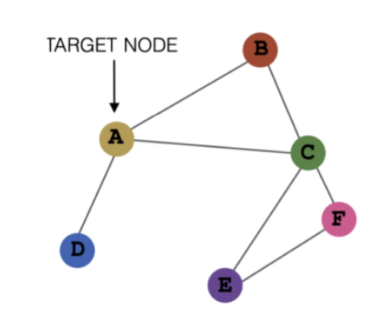
Each node has an initial scalar feature:
\(h_A = 1, h_B = 2, h_C = 3, h_D = 4, h_E = 5, h_F = 6\).
We apply one layer of message passing defined as follows:
- Aggregation:
\(m^{(k)}_{N (v)} = \sum_{u∈N (v)} h^{(k−1)}_u\)
- Update:
\(h^{(k)}_v = h^{(k−1)}_v + m^{(k)}_{N (v)}\).
(a) List the one-hop neighbors of node A.
Explanation: From the graph, the one-hop neighbors of node A are N(A) = {B, C, D}.
(b) Compute the aggregated message \(m_A\).
Explanation: The aggregated message to node A is
\(m_A = h_B + h_C + h_D = 2 + 3 + 4 = 9.\)
(c) Compute the updated representation \(h^{(1)}_A\).
Explanation: The updated representation of node A is
\(h^{(1)}_A = h_A + m_A = 1 + 9 = 10.\)
(d) If we apply a second message-passing layer, which new nodes could influence A? Briefly explain.
Explanation: Nodes E and F influence A after a second message-passing layer because they are two hops away.
Problem 9 RNN
Recurrent neural networks (RNNs) are a type of neural network used for sequential modeling. In this question, we will analyze the forward pass of an RNN and identify what challenges may arise when training it.
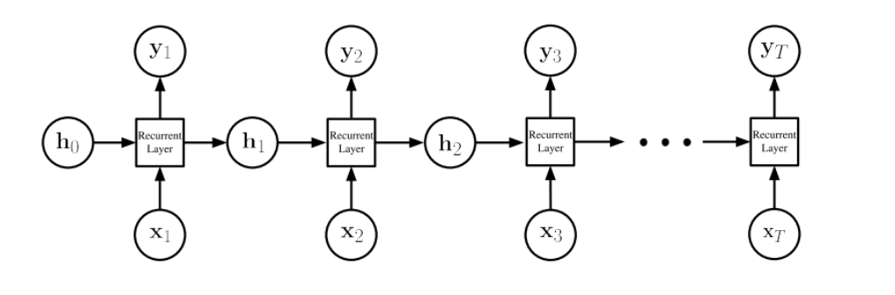
A simple RNN architecture. At time t, an RNN computes a hidden state \(h_t\) based on the current input \(x_t\) and prior hidden state \(h_{t−1}\) and outputs \(y_t\).
Consider the RNN architecture shown in the figure above. At each time step t, the network receives an input \(x_t\) ∈ \(R^{d_{in}}\), updates a hidden state \(h_t\) ∈ \(R^{d_h}\) , and produces an output \(\hat{y_t}\) ∈ \(R^{d_{out}}\).
The hidden states and outputs are given by recurrence relations:
The functions \(φ_h(·)\) and \(φ_y(·)\) are arbitrary element-wise non-linearities. The RNN has three weight matrices \(W_h\), \(W_x\) and \(W_y\) and two bias vectors \(b_h\) and \(b_y\). Assume the initial hidden state is \(h_0\) = 0, the non-linearity \(φ_h(h) = h\), and the biases \(b_h\) = 0 and \(b_y\) = 0. After one time step T = 1 we have \(h_1 = W_xx_1\) and \(y_1 = φ_y(W_yW_xx_1)\).
(a) Express hidden state \(h_2\) and output \(y_2\) in terms of the weight matrices \(W_y, W_x, W_h\) and inputs \(x_1, x_2\).
Explanation:
(b) Express hidden state \(h_3\) and output \(y_3\) in terms of the weight matrices \(W_y, W_x, W_h\) and inputs \(x_1, x_2, x_3\).